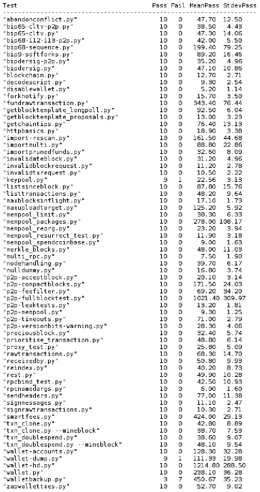

Weekly musing #6 - And up again...
 |
Bitcoin Unlimited
v1.0.2.0 release (fix for 2nd memory exhaustion incident)
Another release (1.0.2.0), fixing another Xthin exploitable bug similar to the previous memory exhaustion issue.
Again, the problem and a workaround were quickly identified. Having use-thinblocks=0 disables Xthin more effectively since 1.0.1.4 - fortunately that worked and probably protected quite a few nodes. Still, having 1/3 of the BU nodes killed again obviously shakes confidence.
A lot of fixes were brought together for the 1.0.2.0 release, which made it take longer. Good things take time, but bad code can waste a lot of time. I guess BU is paying the price for changing p2p protocol code without sufficient review and testing in the early days. While some of the easily exploited holes have now been closed, there are some worries remaining, like the risk of someone producing relatively cheap collisions, or the memory limit while reconstructing thinblocks being perhaps a little higher than needed.
Still, my feeling is BU is getting more robust with each attack. However, recovery was a little more protracted with this one, as it tool longer for the official binaries to be released. Source code fixes were available in PR form quite early on.
There was however again a percentage of users who probably will not come back to BU because of this incident. Classic seems to have made some small gains (not visible on chart below).
 |
With the aid of a little script from thezerg, I managed to get my BU gitian build working for this release, and was thus able to sign the 1.0.2.0 checksums. I think I will need to abandon my gitian build VM though, it seems just to slow compared to others.
pruning.py problems not local to BU
After getting such poor pass rates on the pruning test, I executed it on Classic and Core latest builds as well.
On Classic, it went into a loop, which I stopped after several hours.
On Core, it timed out as well. I raised Github issue 10393 which has yet to receive a response.
Miscellaneous
I opened an issue for the overly verbose keypool traces in the log file. These have been bugging myself and others - they often lead to questions whether something is wrong. I have not decided which debug flag to use for them.
BUIPs
There are some interesting coordination-related proposals which have been raised on the forum (in Draft BUIP form):
- Peter Rizun's BUIP055
- Tomas van der Wansem's threshold-based BUIP (no number yet)
- Sancho Panza's BUIP to add BIP135
I'm looking forward to the upcoming voting - I will raise BUIP038 too since it did not get quorum the time before last, and I think that it should be put to the vote now that membership and participation have increased. I am undecided on whether to make it into a new BUIP with a toggle to enable the sticky gate instead of just removing it as BUIP038 proposed. If anyone has strong feelings about that, I'd like to hear about them!
Bitcoin-ABC
The failing regression tests have been sorted out - ABC is now passing its Travis tests.
- Removed SegWit regression tests
- Fixed p2p-compactblocks.py
- Fixed wallet transaction check which failed lots of regtests
- Removed leftover bumpfee code
- Removed replace-by-fee.py
- Fixed maxuploadtarget.py
While looking at fixing the failing nulldummy.py test, I considered removing the NULLDUMMY support entirely. It is a soft-fork which is actually functionally separate from SegWit, but deployed on the same bit! This is a bit unorthodox, but on the mailing list Johnson Lau defended this with the reason that it would reduce testing effort for SegWit not to handle it as an independent soft-fork.
After raising an issue to decide on the right course of action, I discussed it with deadalnix, who was in favor of retaining it for now.
I have created an ABC branch (on my personal fork repo) where I have executed a more aggressive removal of this currently unused feature and its test. I will be cherry-picking from the mainline ABC repo, trying to keep it clean of features which are not yet present or needed in today's Bitcoin Core, and focusing only on the basic blocksize scaling part.
As part of resolving the failing tests, I did 10 runs of the '-extended' regression test suite, excluding the 'pruning' test which takes too long. The results were interesting - not all tests are passing reliably on my (old) system. Times are in seconds, and only the times of passes are counted for mean/stdev statistics.
|  |
{kind=link}
The next step will be adding a true Adjustable Blocksize Cap. This will be where the fun really starts!
If anyone is interested in assisting with the ABC effort, contact us or submit PRs / issues directly on Github!
parity-unlimited
There is some more developer interest for giving parity support for bigger blocks. Personally, I did not find time to continue test experiments with parity-bitcoin or parity-unlimited, but it's been nice to chat with other people on the BU slack about it.